Implied Volatility 1
The VIX as the market's live read on expected future volatility — and why you switch between Portfolio Manager and Trader as it moves.
Implied volatility is the future volatility the market is pricing right now; the VIX reads it for the S&P500, and a big VIX move is your signal to change gear between building portfolios and short-term trading.
The gist
- Historical (Realized) Volatility is FACTUAL — it has happened and cannot change. Implied (future) Volatility is EXPECTED — the market's forecast of future vol priced right now, and it can fluctuate. Assessing volatility is "one of the most important things you will ever do as a Professional Trader."
- The VIX is the S&P500 CBOE Volatility Index: long-run average ≈ 20.59, high 89.53 (31 Oct 2008, GFC), low 8.56 (30 Nov 2017). It mostly sits ~10–20 and mean-reverts — spiking in crises then decaying back toward ~20.
- "Volatility is a Trader's best friend and a Portfolio Manager's worst enemy." More expected vol = more short-term opportunity; a doubling of vol doubles a portfolio's daily P/L swing with no action taken — more risk for free.
- Daily S&P500 returns are non-normal (a 1-STD move happens 79% of the time, not the Gaussian 68%), so you should be a Portfolio Manager on a 1–3 month horizon ~80% of the time and a day/weekly Trader a maximum ~20% of the time.
- VIX up 25%+ means the portfolio risk of the entire world just went up 25%+ — a big VIX move drives a big market move because participants de-risk. Most are slow to de-risk, so aim to de-risk BEFORE them and keep cash/margin to exploit the opportunities that creates.
- There are no hard-and-fast rules — everything is situational. "Rules = Dogma = Losses." And critically: the VIX itself and VIX-replicating derivatives (VXX/ETNs) are NOT suitable instruments to hedge portfolios.
Realized vs Implied volatility
- Prior lessons measured Realized (Historical) Volatility via the Distribution of Returns (DoR) and Average True Range Percentage (ATRP) — tools to assess Opportunity and Risk from what has already happened.
- This lesson turns to Implied (future) Volatility: the Expected volatility in the future, as priced right now by the Market.
- The core distinction: Historical Volatility is FACTUAL (it has happened, cannot change); Implied Volatility is EXPECTED given all current market information, and it CAN fluctuate.
- Assessing market volatility is "one of the most important things you will ever do as a Professional Trader" — with implications retail traders on the whole do not fully comprehend.
Historical vol tells you how an instrument HAS behaved; implied vol is the market's forecast of how it WILL behave, read live from option prices.
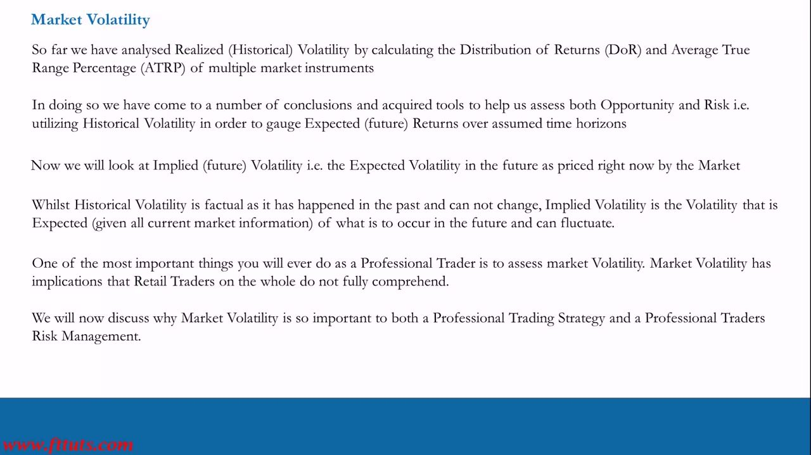
The VIX: the S&P500 volatility index
- The VIX is an implied-volatility index on the S&P500 — a constant measure of 30-day expected volatility (annualized) of the US stock market, derived from real-time mid-prices of S&P 500 options.
- Long-run stats: High 89.53 on 31 Oct 2008 (GFC), Low 8.56 on 30 Nov 2017, Average ≈ 20.59.
- It spends most of its time in the ~10–20 range with sharp spikes in crises — the largest in 2008–09 (GFC), a large 2020 (COVID) spike, and smaller spikes in 2010, 2011, 2015, 2018.
- It is mean-reverting: it spikes then decays back toward the ~20 average.
- The VIX is negatively correlated with the S&P500 over longer periods — the market bottoms near VIX peaks; the VIX trends down as the S&P trends up. (This is NOT reliable over short periods.)
The VIX value IS the annualized % expected vol; scale to a period by dividing by √time (VIX 20 ≈ 5.77% monthly, ~1.26% daily). CBOE VIX_Hedges.pdf tabulates the full VIX→yearly/monthly/weekly/daily conversion.
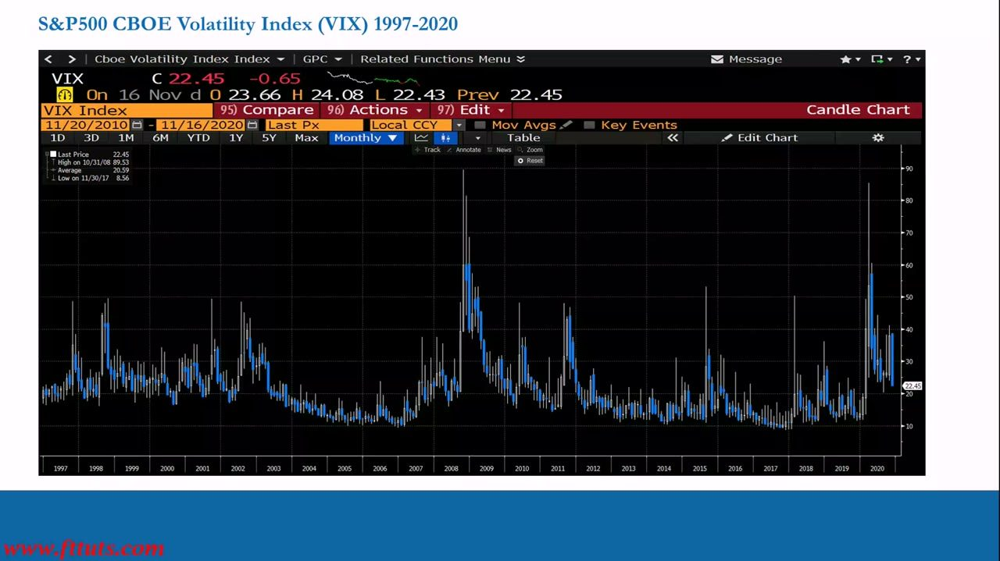
Why the VIX matters — traders are slaves to volatility
- "Volatility is a Trader's best friend and a Portfolio Manager's worst enemy."
- Expectation of MORE volatility = MORE short-term trading opportunities; expectation of LESS volatility = FEWER opportunities.
- "Traders are therefore slaves to volatility. If there is no volatility there are no opportunities / risk."
- Professionals do NOT try to profit on short-term positioning when vol is expected to be low — they remain Long/Short Portfolio Managers with a 1–3 month horizon.
- When vol rises by a large % in a short space of time, expectations have aggressively shifted, and professionals switch FROM Portfolio Managers TO shorter-term opportunistic traders.
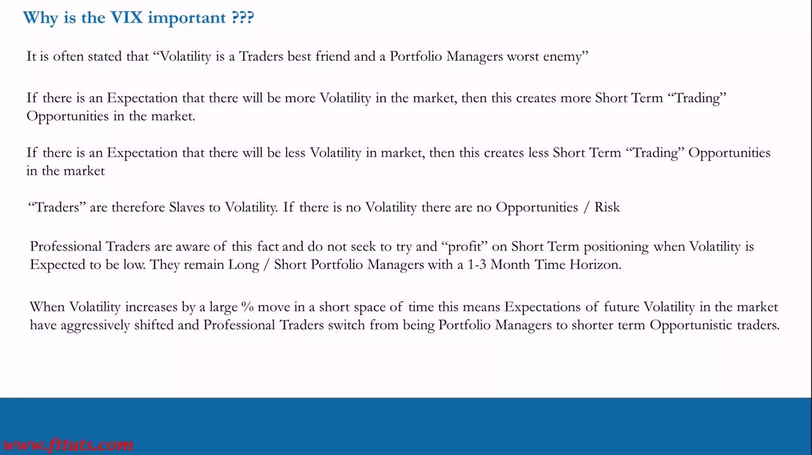
80/20: fat tails set how you spend your time
- S&P500 daily Distribution of Returns (Adjusted Close-to-Close, Count 14,812): Mean 0.031%, Standard Deviation 1.035%, Median 0.044%, Kurtosis 20.85 (very peaky), Skewness −0.64, Min −20.467%, Max 11.580%.
- Std-dev coverage vs Normal: 1 STD actual 79.18% vs Normal 68.27%; 2 STD 95.33% vs 95.45%; 3 STD 98.59% vs 99.73%.
- The S&P500 is NOT normally distributed — a 1-STD move happens ~79% of the time, not the Gaussian 68%, because the distribution is peakier with fatter tails.
- Implication: be a Portfolio Manager ~80% of the time and a short-term (day & week) trader no more than ~20% of the time.
- Regime-switch rules: VIX "in transition" and RISING → switch from Portfolio Manager to short-term (daily & weekly) opportunities. VIX "in transition" and FALLING → switch back to building portfolios as a monthly Portfolio Manager.
The 79%-vs-68% fat-tail fact is the quantitative grounding for the whole 80/20 split — you spend most of your time in portfolio mode because that is where the odds live.
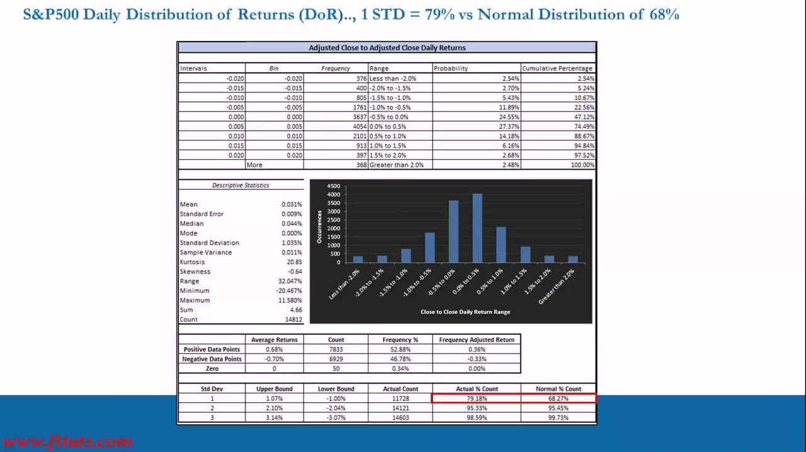
Retail's core misperception
- A main reason retail traders lose money: they believe professionals are ALWAYS chasing quick short-term opportunities. "That is totally wrong."
- In reality, all professional traders are first and foremost Portfolio Managers, and "Traders" second.
- The misperception is spread by participants with a conflict of interest — brokers and charlatan trading educators — who sell a narrative to make you trade or buy products, not the cold hard facts, and don't give you the tools to assess for yourself.
- "Ignorance keeps the wheel spinning and keeps them in business."
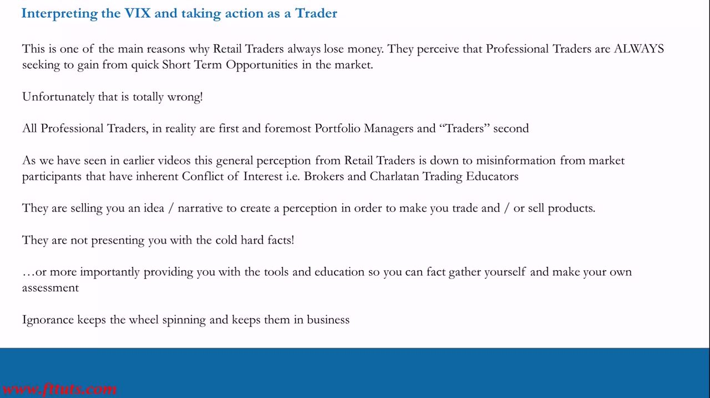
Why vol is a Portfolio Manager's worst enemy (worked example)
- $100,000 gross "Cash for Cash" portfolio: Longs $50,000 + Shorts $50,000, 10% position sizes = each position $10,000, made of S&P500 mega/large-cap stocks.
- On a normal day (the 79%-of-times case) the P/L volatility is ~0.35% → $100,000 × 0.0035 = $350 typical daily P/L swing.
- If expected volatility doubles (e.g. 15% → 30% annualized), the daily P/L swing doubles from $350 to $700.
- The manager is now taking MORE risk without doing anything — that is exactly why volatility is a Portfolio Manager's worst enemy.
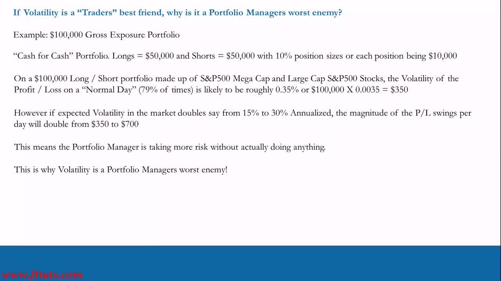
What top institutions do when they forecast rising IV
- When top institutions (Goldman Sachs, active-manager hedge funds) forecast Implied Volatility will rise by 100% in the next few months, they usually buy hedges (Puts) and reduce equities exposure by ~50%, transitioning to short-term opportunistic traders.
- From an Opportunity view the time horizon becomes SHORTER; from a Risk-Management view the position sizing becomes SMALLER.
- Risk and Opportunity are two sides of the same coin — you must take risk to get the opportunity, but you must react and do the right thing when conditions outside your control dictate the approach.
- Portfolio risk management = Pre-emptive practices put in place in advance PLUS being ready to act Re-Actively — combining both is what gives the best chance at long-term consistent profitability.
- Detailed risk-management practices are beyond the scope of the IPLT series (covered in the PTM series).
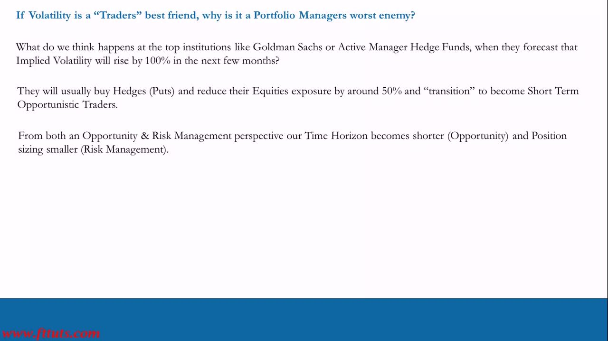
The Pro Trader systematic process
- A recurring 4-box process for Long/Short Portfolio Management on a 20–60 day horizon, split Theory → Implementation.
- Theory — Fundamentals (MOST IMPORTANT): "if you are fundamentally bullish you should never be short a stock just because the chart doesn't look good, and vice versa."
- Theory — Timing (TECHNICALS): charts don't generate trade ideas; they're backwards-looking and only help with timing and a little risk management. Only the basics are required.
- Implementation — Trade Structure (CATALYSTS): identify catalysts beyond earnings; go through the options calendar and work backwards.
- Implementation — Risk Management (PORTFOLIO): pre-emptive and re-active; build low-correlation positions with differing trade structures and solid execution. 8–12 ideas provides diversity. STAY IN MOTION!
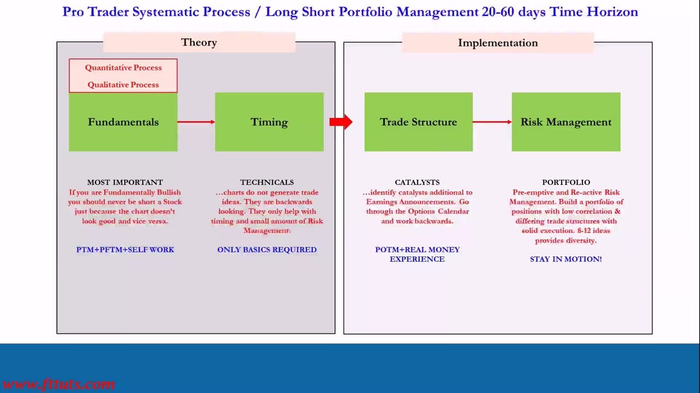
The VIX as a whole-market risk gauge
- VIX up 25%+ ⇒ the "Portfolio Risk" of the entire world just went up 25%+; VIX down 25%+ ⇒ world portfolio risk down 25%.
- "These portfolios" aren't just retail — they're hedge funds, pension funds, mutual funds and investment banks. That's why a big VIX move drives a big market move: participants are de-risking.
- Therefore aim to de-risk BEFORE them.
- The vast majority of participants (even professionals) are slow to de-risk — they act only when forced. This slowness creates short-term opportunities for us.
- But you must have cash (margin) available to exploit them — which is why you transition first, to get ahead of the game.
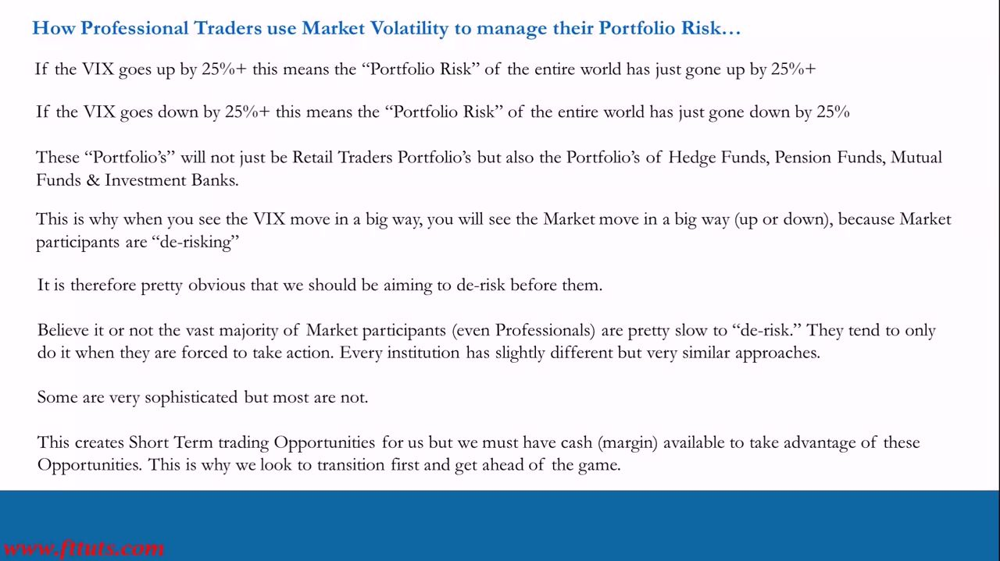
The "General" Approach — the VIX transition playbook
- When Index Volatility is in transition and RISING: reduce the NUMBER of positions by ~50%; reduce remaining position SIZES by 25%–50%. Take a short-term approach — directional bets over a 1–5 day horizon.
- When Index Volatility is in transition and FALLING: increase positions by up to 100%; pick levels discretionarily to increase sizing. Take a portfolio approach — make money over the 1–3 month horizon in a diversified Long/Short book.
- This is an example of Re-Active Risk Management applied at the portfolio level across the board.
- Note the asymmetry: when cutting, you reduce $ exposures INDISCRIMINATELY regardless of idiosyncratic fundamentals; when adding, you increase exposures BASED ON fundamentals.
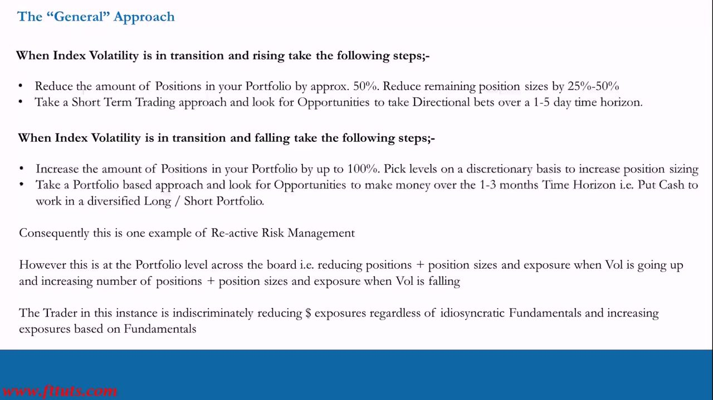
No rule book — everything is situational
- There are no hard-and-fast rules/hacks telling you EXACTLY what to do when the VIX moves aggressively — no "driver's manual," no rule book to buy.
- "Don't become a rules-based monkey" — that leads to lazy, uninformed, bad decisions. Be flexible! Rules = Dogma = Losses.
- Everyone's risk tolerance, strategies and portfolios differ.
- VIX rising aggressively → interpret what's happening in the world and why; if you don't like the volatility risk, reduce exposure.
- VIX falling aggressively → interpret the world; if it's hard to make money short-term trading, take it as a sign to begin building a diversified Long/Short portfolio.
- Skip this approach and you are not maximising opportunities, nor taking a professional trader's approach.
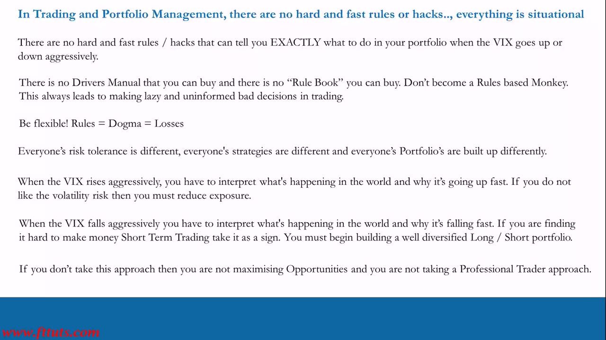
The VIX and VIX derivatives are NOT hedges
- You cannot trade the VIX directly, and VIX futures/options are inaccessible to most retail traders — so exposure is taken via volatility ETFs/ETNs like the VXX (created by Barclays and others after the 2008 crisis).
- Structural decline via contango: the VXX rolls first/second-month VIX FUTURES, not spot. VIX futures are usually in contango (priced above spot); since a future must converge to spot by expiry, contango futures are structurally predisposed to DECLINE — an almost-permanent negative roll(over) yield.
- The performance gap is enormous: VXX all-time return ≈ −99.99% while the S&P500 returned ~24,114% over the same span. It fell in most years (−76% 2012, −70% 2016/2017, −67% 2019). A "put 25% in VXX and buy-and-hold as a hedge" strategy would have destroyed the portfolio.
- "Short and hold" is also a trap — "picking up pennies in front of a steamroller." Backwardation appears during spikes: VIX +104% on 5 Feb 2018 broke the XIV (inverse VIX ETN) and forced its liquidation; the VXX returned +58.85% YTD by 26 Mar 2018, wiping out short-sellers.
- Other hazards: susceptible to market-maker manipulation; issuers hold "redemption features" letting them shut the fund without cause. Trading the VXX is NOT the same as trading the VIX.
- ITPM view: for the vast majority of retail traders these products are not worth the trouble — there are better ways to exploit and hedge volatility. (Full detail in the downloadable VIX_Hedges PDF.)
Although the S&P500 and VIX are inversely correlated over LONGER periods, they are not always inverse over SHORT periods — and negative roll yield means the VXX doesn't track the VIX over time. One volatility event can blow up an account on either side of the trade.
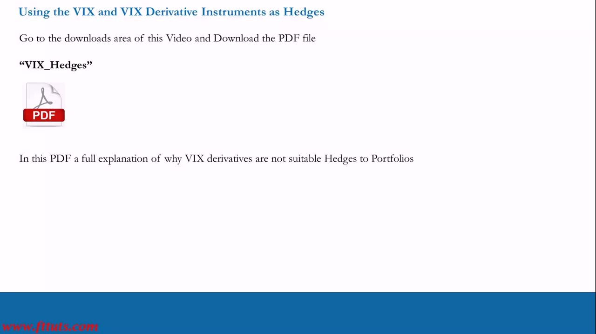
Conclusion
- The VIX, as a measure of S&P500 market-level volatility, is a useful gauge of what actions to take in general as a trader.
- Combined with DoR analysis and ATRP, it tells us to be Portfolio Managers on a 1–3 month horizon ~80% of the time and Day/Weekly "traders" a maximum ~20% of the time throughout history.
- When the VIX moves aggressively up or down, use it as an indicator to shift approach — transitioning from Portfolio Manager to Trader and back.
- Caveats: everything is situational; you must interpret what's actually happening before acting. The VIX itself and VIX-replicating derivatives are NOT suitable instruments to hedge portfolios.
- The action must be re-active and at the time; it's more beneficial to trade the positions themselves, or buy Options outright as hedges prior to / in the early stages of a VIX move.
- Looking ahead: Video 7 (with Chris Quill) shows how to calculate Implied Volatility yourself from public option prices — as a head-check, as a professional skill, and so you can do it yourself forever (Implied_Volatility_Calculator download).
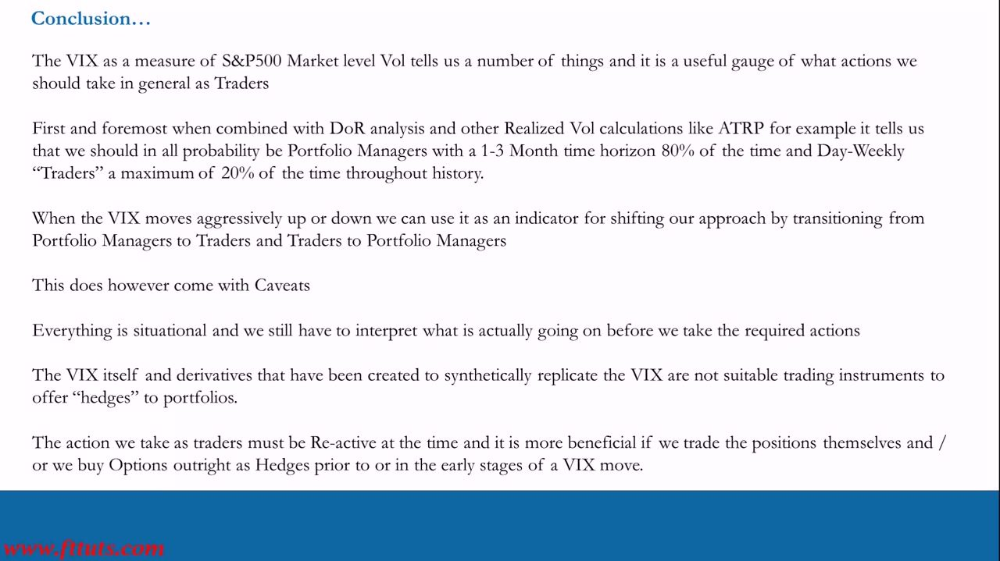
Glossary
- Realized (Historical) VolatilityVolatility measured from what has already happened, via the Distribution of Returns and ATRP. FACTUAL — it cannot change.
- Implied (future) VolatilityThe Expected volatility in the future as priced right now by the Market, derived from current option prices. EXPECTED given all current information — and it can fluctuate.
- VIXThe S&P500 CBOE Volatility Index — a constant measure of 30-day expected volatility (annualized) of the US stock market, from real-time mid-prices of S&P 500 options. Average ≈ 20.59; high 89.53 (31 Oct 2008); low 8.56 (30 Nov 2017).
- VIX → period conversionThe VIX value IS the annualized % expected vol; scale to a period by dividing by √time (VIX 20 ≈ 5.77% monthly, ~2.77% weekly, ~1.26% daily). CBOE VIX_Hedges.pdf tabulates the full table.
- 1-STD move = 79% (not 68%)Because S&P500 daily returns are non-normal (Kurtosis 20.85, negative skew), a 1-STD move occurs ~79% of the time vs the Gaussian 68% — the grounding for the 80/20 Portfolio-Manager/Trader split.
- Regime transition (VIX)VIX in transition and RISING → switch from Portfolio Manager to short-term Trader (cut positions ~50%, sizes 25–50%, trade directional over 1–5 days). VIX falling → switch back to a diversified Long/Short book over 1–3 months (increase positions up to 100%).
- De-riskingVIX up 25%+ = the world's portfolio risk up 25%+ across hedge/pension/mutual funds and banks; a big VIX move drives a big market move as participants cut exposure. Most are slow, so aim to de-risk first and hold cash/margin.
- Pre-emptive vs Re-Active risk managementPre-emptive = practices put in place in advance for volatility events; Re-Active = acting at the time as conditions dictate. Combining both gives the best chance at long-term consistent profitability.
- VXX / VIX ETNsVolatility ETFs/ETNs (e.g. Barclays' VXX) built on rolling first/second-month VIX FUTURES, not VIX spot — the only VIX exposure most retail traders can access.
- Contango / negative roll yieldVIX futures usually price above spot (contango); since futures must converge to spot at expiry, they are structurally predisposed to decline — giving the VXX an almost-permanent negative roll yield (all-time return ≈ −99.99%).
- BackwardationSpot trades above the futures price, appearing during short-term volatility spikes. It wrecks short-VXX positions — VIX +104% on 5 Feb 2018 broke the XIV; VXX +58.85% YTD by 26 Mar 2018 wiped out short-sellers.